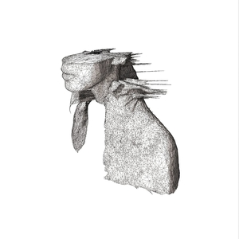

Regarded as one of the best albums of the 2000s, the blend of different genres such as rock, electronica, and hip-hop makes this album a unique piece of art.

An electronica downtempo masterpiece that seamlessly blends organic and electronic elements creating an immersive listening experience.

A remarkable album due to its powerful and emotive songwriting, combining anthemic melodies with cinematic and electronic elements to create a deeply moving and memorable listening experience.